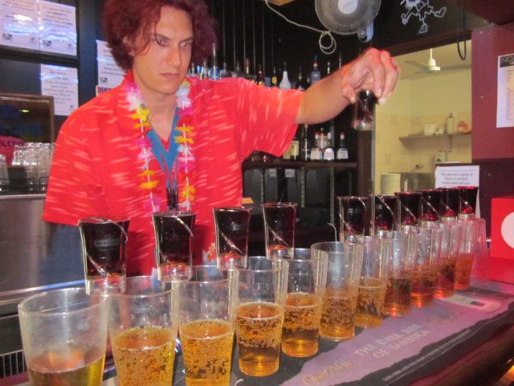

- We learnt how to stay dingo-safe; as Ruta and I were two of the smallest (the size of a child apparently) we were particularly vulnerable to attack
- We drove 4x4s on the beach, got stuck in the sand, over rivers and through the forest; "ANUZZER ONE!!!"
- We built a human pyramid and jumped off sanddunes at Lake Wabby
- We rounded off the trip with a pirate party, where Ruta first displaying her tendency for over-generous Jaegerbomb purchases.
- We boarded a sailing ship, complete with mast, ropes and a hot captain who took a shining to Katie and subsequently persuaded Katie and Ruta to sail around the south-east corner of Australia with him.
- Due to the less than perfect weather, it was pretty choppy and we spent a lot of time lying starfished on the deck to avoid vomiting.
- We perfected our 'swinging from rope swings' technique
- We snorkelled on the reef and I managed to get a great snorkel mask mark on my face, like a dickhead.
- Years later we met up in Cape Trib for Ruta's hen-do, staying in an open-sided villa with jungle views.
- I got the pleasure of sleeping outside with all the insects, while Ruta and Ellinor got the boring bedroom. Ellinor bonded with a friendly cockroach she christened 'Mr Symphony'.
- The beach was lovely but the sea was full of sharks, crocs and deadly jellyfish so we refrained from paddling.
- We went to a local bar where Ellinor got eaten alive by local guys.
- Ruta had a fabulous wedding and I was her favouritest bridesmaid. Ellinor was pretty good too. Sophie was the worst one.
- Me, Ellinor, Sophie, Luke, and Vytas crashed the honeymoon, and had a hilarious time on Philip Island drinking a lot and going for long windy beach walks.
- We saw penguins in the rain
- we drove out to the 12 Apostles and some waterfalls, and Sophie made some smelly farts at the dinner table. Good times!
Some key locations:
2009
Hervey Bay and Fraser Island


Airlie Beach and Whitsundays
2016
Cape Tribulation


Melbourne,
Philip Island
and Great Ocean Road